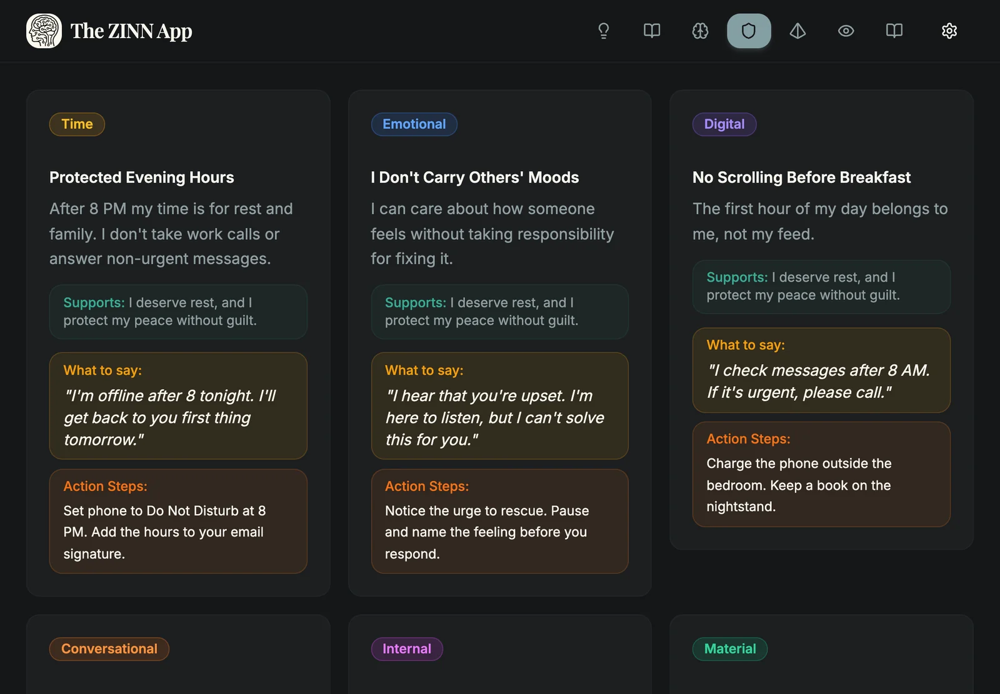
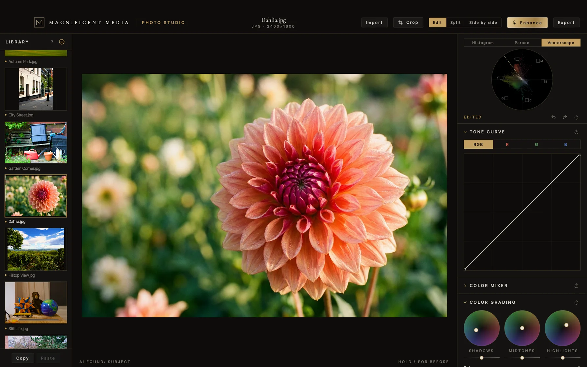
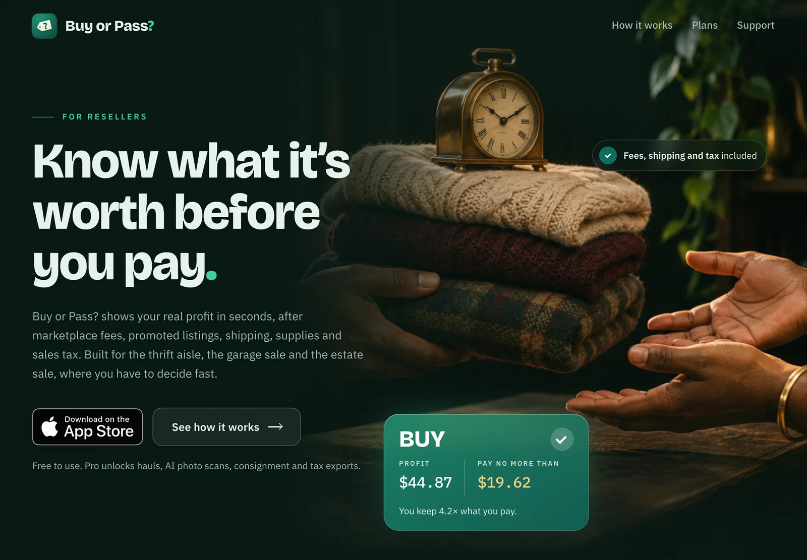

Self Actualized Technologies
Technology for the life you're becoming.
The ZINN App · Photo Studio · Buy or Pass?
01 · The mind
The ZINN App
Peace is a practice.
02 · The craft
Photo Studio
Your photos, made magnificent.
03 · The means
Buy or Pass?
Resale profit before you buy.
Rise to the top of your pyramid.
Three tools for the mind, the craft and the means, made by Self Actualized Technologies.
Explore the appsWhy we're called this
At the top of Maslow's pyramid is self-actualization: becoming who you're meant to be.
Self Actualized Technologies makes software for the climb. One app helps you think more clearly and set healthy boundaries. One helps you make your photographs magnificent. One helps you decide, in seconds, whether a find is worth buying to resell.
The mind, the craft and the means. Each one is a step toward the peak.
01 · The mind
The ZINN App
Peace is a practice.

The real Boundaries screen, filled with example boundaries.
A structured, reflective companion for your daily self-work, built for personal growth, emotional regulation and recovery.
- Beliefs
- Social
- Thinking
- Boundaries
- Maslow
- Awareness
- Spiritual
- Boundaries from your beliefs. Pick a pro-social belief and get boundaries across ten types, each with what to say and the steps to keep it.
- CBT thinking reports. Walk from a trigger to your first thought, your feelings and a healthier replacement thought.
- Maslow, journaling and reflection. See which unmet needs may be driving you, spot monthly patterns and connect entries to scripture across major world faiths.
The ZINN App is an educational self-reflection tool, not a medical or mental health service. Its AI insights are for information only.
Clear mind. Beautiful work. Smart money.
02 · The craft
Photo Studio
Your photos, made magnificent.

Magnificent Media Photo Studio for Mac, grading a dahlia.
An AI photo editor that explains every change it makes. Enhance in one tap, mask the sky or subject in one click, and export ready for every feed.
- Enhance that shows its work. It sets the real sliders, then lists every change in plain English.
- Looks and color like a colorist. Eight house looks, three-way color grading, a tone curve per channel and a vectorscope.
- Everything happens on your Mac. Camera RAW, HEIC and JPEG, with smart masks and portrait tools.
For Mac (macOS 14 or later). One payment, no subscription.
03 · The means
Buy or Pass?
Resale profit before you buy.

getbuyorpass.com
Snap it, check the profit, decide in seconds. Fees, shipping and sales tax are built in, so you know what you'd really keep before you pay.
- A clear verdict. Buy or pass, with your real profit and return, by your own rules.
- Identify with a photo. The AI names the item, writes your sold-price search and drafts a listing. It never sets prices.
- Run it like a business. Hauls with a trip budget, inventory, mileage, expenses and tax-ready exports with Pro.
Free to use, for iPhone and iPad. Pro is an optional subscription. Not affiliated with eBay Inc.
Become who you're meant to be.
Choose the step you're on.